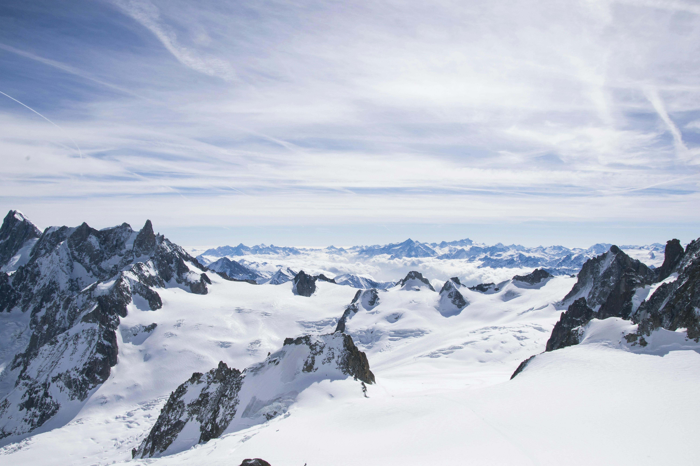
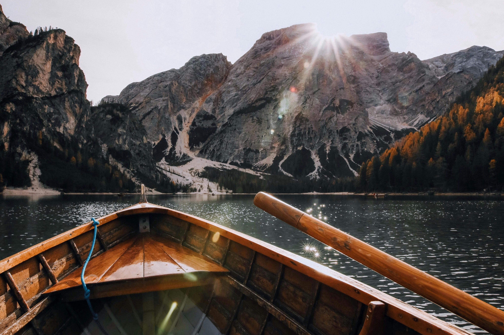
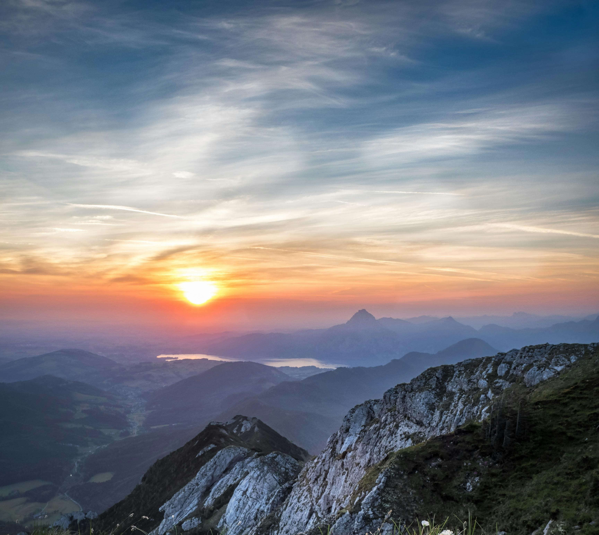

Opinie naszych użytkowników
Ania Nowak: Niesamowite doświadczenie w Amazonii. TravelBuddy pomógł mi w organizacji całego wyjazdu!

Emilia Wojciechowska: Odkrywanie tajemnic Pragi było niesamowite. TravelBuddy pomógł mi znaleźć ukryte klejnoty tego miasta!

Mateusz Borek: Safari w Kenii to coś więcej niż podróż – to doświadczenie życia. Dzięki TravelBuddy, każdy detal był perfekcyjny.

Zofia Kuczyńska: Narty w Alpach Francuskich były jak sen. TravelBuddy zadbał o wszystkie rezerwacje, co sprawiło, że mogłam cieszyć się każdą chwilą.
Artur Lewandowski: Tydzień w Tokio to było jak podróż do przyszłości. Bez TravelBuddy nie odważyłbym się na taką przygodę!

Anna Kowal: Spływ kajakowy po Amazonce to coś, czego nigdy nie zapomnę. Dzięki TravelBuddy, wszystko poszło gładko od startu do mety.

Jan Kowalski: Wspaniała przygoda w Alpach! Dzięki TravelBuddy łatwo znalazłem najlepsze trasy i zakwaterowanie.
